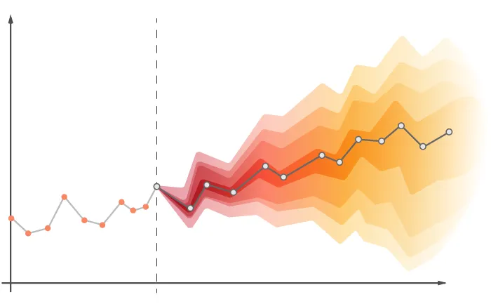

#This lab...
library(tidyquant)
library(dplyr)
library(tidyr)
library(readr)
library(forecast)
carrot <- tq_get(c("WPU01130212"),
get = "economic.data",
from="2007-08-01")Week 6 Lab: Time Series Decomposition and Forecasting

This Lab Contributes to Course Objectives: 1, 2, 3, 4, 7, 8
Learning Objectives R
Understand time series decomposition in R
Understand the steps of forecasting using a decomposition in R
Learning Objectives Tableau
- Visualize decompositions and forecasts created in R
R: Time Series Decomposition
Step 1: Load your data
First, you need to load your time series data into R and set up your script (description, working directory, load packages).
Step 2: Convert your data into a time series object
Next, you need to convert your data into a time series object that R can work with. To do this, you can use the ts() function in R. The ts() function takes two arguments: data and frequency. data is a vector or matrix of your time series data, and frequency is the number of observations per unit time (e.g., the number of observations per year, per month, etc.). In the case of the carrots dataset, the frequency is 12 (since there are 12 observations per year).
To convert the carrot dataset into a time series object, run the following command:
carrot_ts <- ts(carrot$price,
frequency = 12,
start=c(2007,8))This will create a new time series object called carrot_ts.
Step 3: Decompose your time series data
Now that you have your time series data in a format that R can work with, you can use the decompose() function to decompose it into its underlying components. The decompose() function takes one argument: x, which is the time series object you want to decompose.
To decompose the carrot_ts time series object, run the following command:
carrot_decomp <- decompose(carrot_ts)This will create a new object called carrot_decomp that contains the decomposed components of the carrot_ts time series object.
Step 4: Examine the results of the decomposition
Finally, you can examine the results of the time series decomposition by plotting the decomposed components. The carrot_decomp object contains four components: trend, seasonal, random, and figure. You can access each of these components using the $ operator.
To plot the decomposed components, run the following command:
plot(carrot_decomp$trend)
plot(carrot_decomp$seasonal)
plot(carrot_decomp$random)This will create three separate plots that show the trend, seasonal, and random components of the time series data. You can use these plots to better understand the underlying patterns in your data.
Let’s store this all in a dataframe. For this operation, you will need to load the packages: readrand dplyr.
carrot_decomp_out <- carrot_decomp[1:4] %>%
as_tibble() %>%
rename(price=x) %>%
mutate(measure_date=carrot$date,
forecast=FALSE) %>%
drop_na()Check your understanding: What data type is the variable `measure_date’ in the new data frame? What is the function you would need to execute if you need to convert a character (chr) to a date?
R: Forecasting
Make sure to add the library forecast where you load packages.
Step 1: Extract the trend, seasonal, and residual components
Next, we’ll extract the estimated trend, seasonal, and residual components from the decompose object using the $ operator:
# Extract the trend, seasonal, and residual components
carrot_trend <- na.omit(carrot_decomp$trend)
carrot_seasonal <- na.omit(carrot_decomp$seasonal)[7:(length(carrot_ts)-6)] %>%
ts(.,start=c(2008,2),frequency = 12)
carrot_residuals <- na.omit(carrot_decomp$random)Step 2: Forecast the trend, seasonal, and residual components
To forecast each component, we’ll use the forecast() function from the forecast package in R. For the trend and seasonal components, we can simply use the forecast() function on the corresponding time series objects:
# Forecast the trend component for the next 12 months
carrot_trend_forecast <- forecast(carrot_trend,level = 95, h=60)
plot(carrot_trend_forecast)
# Forecast the seasonal component for the next 12 months
carrot_seasonal_forecast <- forecast(carrot_seasonal,level = 95, h=60)
plot(carrot_seasonal_forecast)Did you get a warning? What does the warning message tell you? For the residual component, we’ll need to create a model to forecast the residuals. There are many possible approaches to modeling the residuals, but a simple one is to use a moving average model (MA model). Here’s an example of how to create a simple MA(1) model for the residuals:
# Create a time series object for the residuals
carrot_residuals_ts <- ts(carrot_residuals, frequency=12, start=c(2007, 8))
# Fit an MA(1) model to the residuals
carrot_residuals_model <- arima(carrot_residuals_ts, order=c(0,0,1))
# Forecast the residuals for the next 12 months
carrot_residuals_forecast <- forecast(carrot_residuals_model,level = 95, h=60)Step 3: Combine the forecasted components to obtain the final forecast
Finally, we can combine the forecasted trend, seasonal, and residual components to obtain the final forecast for the time series:
# Combine the forecasted components to obtain the final forecast
carrot_forecast <- carrot_trend_forecast$mean + carrot_seasonal_forecast$mean + carrot_residuals_forecast$mean
carrot_forecast_upper <- carrot_trend_forecast$upper + carrot_seasonal_forecast$upper + carrot_residuals_forecast$upper
carrot_forecast_lower <- carrot_trend_forecast$lower + carrot_seasonal_forecast$lower + carrot_residuals_forecast$lowerThis creates the forecast, which is just the future values. We want to append this to the existing time series. First, we will convert this vector into a data frame (a special one called a tibble).
carrot_forecast_df <- tibble(price=carrot_forecast,
upper=carrot_forecast_upper[,1],
lower=carrot_forecast_lower[,1]) %>%
mutate(measure_date=seq(as_date("2023-08-01"), by="months", length.out=nrow(.))) Now, we need to append it to our current data. However, there is some overlap with the actual observed data because some data was lost in the moving average calculation in the decomposition. For the overlapping data, we could either keep both, just the forecast, or just the observed. Let’s just keep the observed and append the remainder of the forecast to carrot_decomp_out.
carrot_forecast_df <- carrot_forecast_df %>%
filter(measure_date > max(carrot_decomp_out$measure_date)) %>%
mutate(forecast=T)
final_out <- bind_rows(carrot_decomp_out,carrot_forecast_df)Now you can export this data for Tableau:
write_csv(final_out,"carrot_forecast.csv")
Lab Script for Week 6: Time Series Decomposition and Forecasting
# This is the script for lab 05.
# Load necessary libraries
library(tidyquant)
library(dplyr)
library(tidyr)
library(readr)
library(forecast)
# Retrieve time series data for carrots
carrot <- tq_get(c("WPU01130212"),
get = "economic.data",
from = "2007-08-01")
# Convert data into a time series object
carrot_ts <- ts(carrot$price,
frequency = 12,
start = c(2007, 8))
# Decompose the time series
carrot_decomp <- decompose(carrot_ts)
# Plot decomposed components
plot(carrot_decomp$trend)
plot(carrot_decomp$seasonal)
plot(carrot_decomp$random)
# Store decomposition results into a dataframe
carrot_decomp_out <- carrot_decomp[1:4] %>%
as_tibble() %>%
rename(price = x) %>%
mutate(measure_date = carrot$date,
forecast = FALSE) %>%
drop_na()
# Extract trend, seasonal, and residual components
carrot_trend <- na.omit(carrot_decomp$trend)
carrot_seasonal <- na.omit(carrot_decomp$seasonal)[7:(length(carrot_ts) - 6)] %>%
ts(., start = c(2008, 2), frequency = 12)
carrot_residuals <- na.omit(carrot_decomp$random)
# Forecast trend and seasonal components
carrot_trend_forecast <- forecast(carrot_trend, level = 95, h = 60)
plot(carrot_trend_forecast)
carrot_seasonal_forecast <- forecast(carrot_seasonal, level = 95, h = 60)
plot(carrot_seasonal_forecast)
# Fit an MA(1) model for residuals and forecast
carrot_residuals_ts <- ts(carrot_residuals, frequency = 12, start = c(2007, 8))
carrot_residuals_model <- arima(carrot_residuals_ts, order = c(0,0,1))
carrot_residuals_forecast <- forecast(carrot_residuals_model, level = 95, h = 60)
# Combine forecasted components
carrot_forecast <- carrot_trend_forecast$mean + carrot_seasonal_forecast$mean + carrot_residuals_forecast$mean
carrot_forecast_upper <- carrot_trend_forecast$upper + carrot_seasonal_forecast$upper + carrot_residuals_forecast$upper
carrot_forecast_lower <- carrot_trend_forecast$lower + carrot_seasonal_forecast$lower + carrot_residuals_forecast$lower
# Convert forecast into a dataframe
carrot_forecast_df <- tibble(price = carrot_forecast,
upper = carrot_forecast_upper[,1],
lower = carrot_forecast_lower[,1]) %>%
mutate(measure_date = seq(as_date("2023-08-01"), by = "months", length.out = nrow(.)))
# Append forecasted data to the existing decomposition dataset
carrot_forecast_df <- carrot_forecast_df %>%
filter(measure_date > max(carrot_decomp_out$measure_date)) %>%
mutate(forecast = TRUE)
final_out <- bind_rows(carrot_decomp_out, carrot_forecast_df)
# Export data for Tableau
write_csv(final_out, "carrot_forecast.csv")Tableau
We will use Tableau to visualize your R forecasts.
Visualizing R Forecasts in Tableau
First, let’s visualize our decomposition:
Connect to the carrot price forecast data you exported in R. To keep everything in the same workbook, create a connection between these data and your original carrot price data (using the Date) variable
Plot your raw data
Add the trend line you calculated in R to the pane below this
Show the seasonality you calculated in R in a pane below this
Finally, show the residuals in the pane below this
You can also play with combining these figures as you see appropriate (e.g., I like to look at the trend line in the same pane as the actual data)
As an aside - let’s change the raw price data to a “moving average” using Tableau’s quick table calculation. Why is this moving average different from the one you calculated in R?